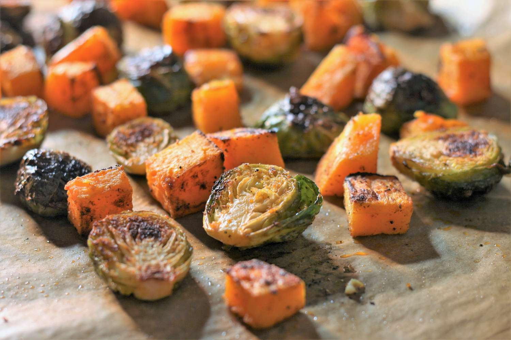

Roasted Veggies

Description
This is a healthy and easy way to use up a variety of vegetables you have in the fridge. Vegetable options you can use include carrots, zucchini, sweet potatoes, onions, bell peppers, cauliflower, brussel sprouts, squash, or broccoli.
Ingredients
- your choice of veggies, chopped into bite-sized pieces
- one lemon
- salt, 1/2 to 1 teaspoon depending on your taste
- pepper, 1/4 to 1/2 teaspoon depending on your taste
- your choice of additional seasonings, such as smoked paprika, garlic powder, or cayenne pepper
- avocado oil - since the oven temperature will be 400 degrees
- chopped parsley, basil or cilantro
Steps
- Preheat oven to 400 degrees and prep your sheet pan. If using parchment paper, line your sheet pan with it.
- Prepare and chop your vegetables into bite-sized pieces. For more delicate vegetables like zucchini and bell peppers, I like to cut them into bigger pieces, as they cook faster than root vegetables like sweet potatoes and carrots.
- Place your chopped veggies onto the sheet pan, spreading them out in a single layer.
- Drizzle avocado oil over the veggies. It's okay if the oil doesn't cover everything in this step because you will be mixing everything altogether with your hands or with a spatula later.
- Cut your lemon in half and squeeze one or both of the halves over the sheet pan, depending on how much acidity you'd like.
- Add your salt, pepper, and choice of seasonings based on your preferences
- Using your hands or a spatula, mix everything on the pan so that the avocado oil and seasonings cover the veggies evenly.
- Bake in the preheated oven until golden, about 25-30 minutes.
- While waiting, you can chop up parsley, basil or cilantro to sprinkle on the roasted veggies when out of the oven.